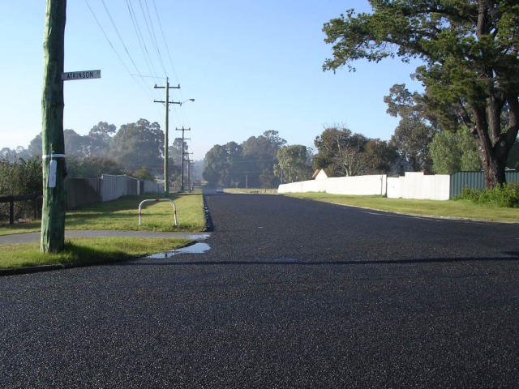
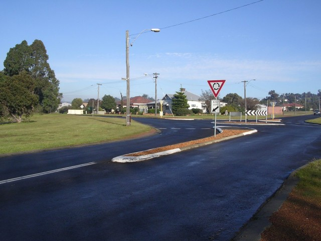
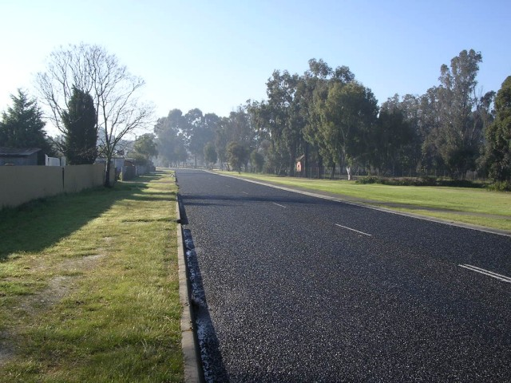
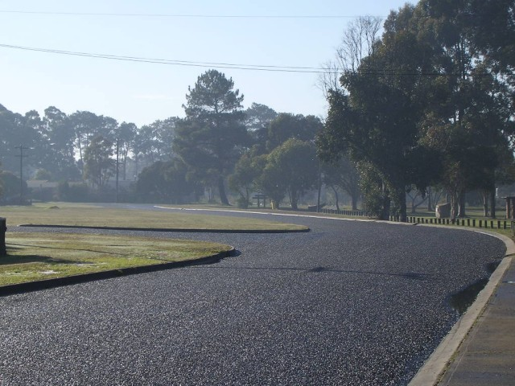
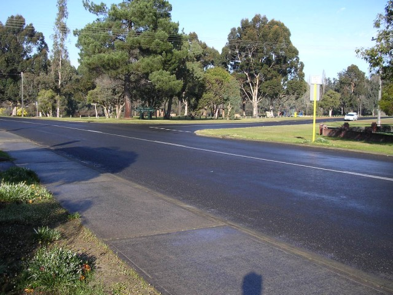

Numbers on the map represent the location where the photographs were taken. Scroll down to view the photographs.
Collie - Rowley Street via Mungalup Road to Crampton Street
|| Contents || Atkinson | Rowley / Mungalup / Crampton | Patterson / Throssell || Home ||
Numbers on the map represent the location where the photographs were taken. Scroll
down to view the photographs.
Return to racingcircuits.net's Photo Archive Main Index

7 - Rowley Street.

8 - Left turn into Mungalup Street.

9 - Looking back at the right turn from Mangalup Street into Crampton
Street, taken from Crampton.

10 - Crampton Street.

11 - Kink on Crampton Street.

12 - Looking back to the left turn into Patterson Street.
Photographs and Text ©Neil Fackerell. Reproduced here with kind permission.